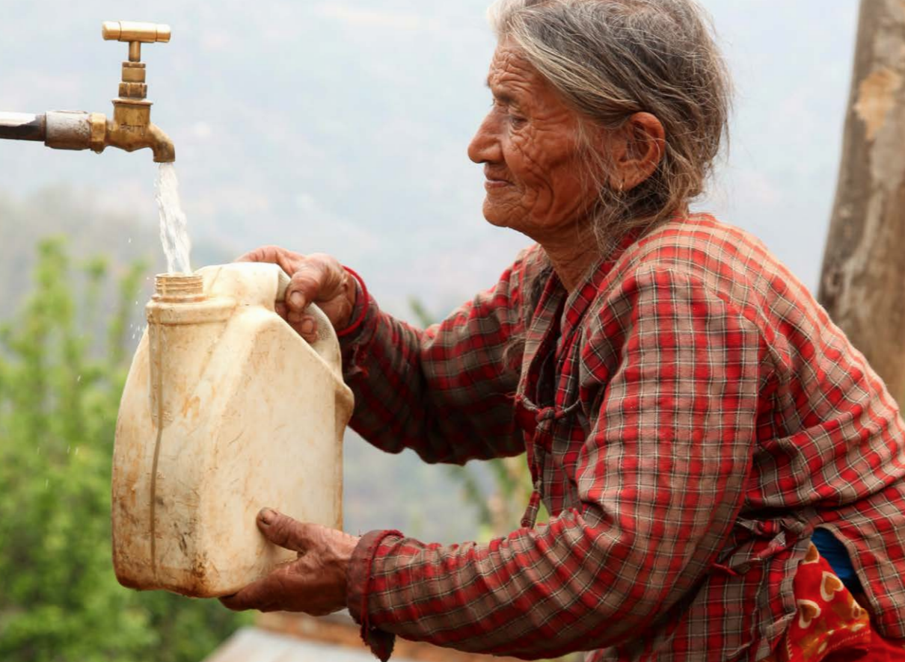
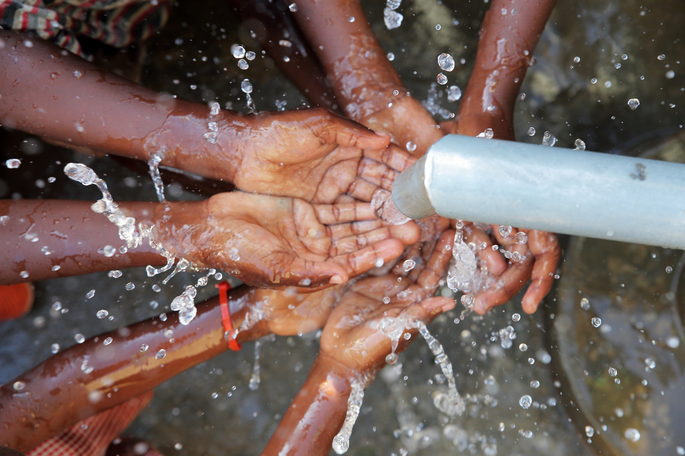
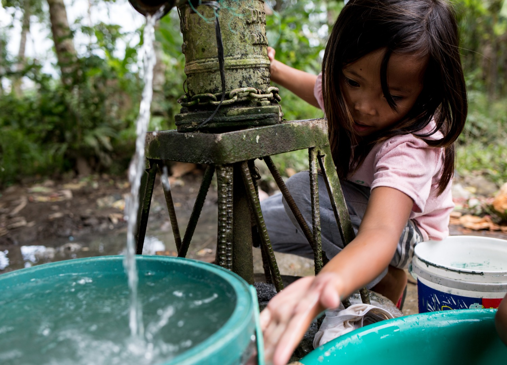
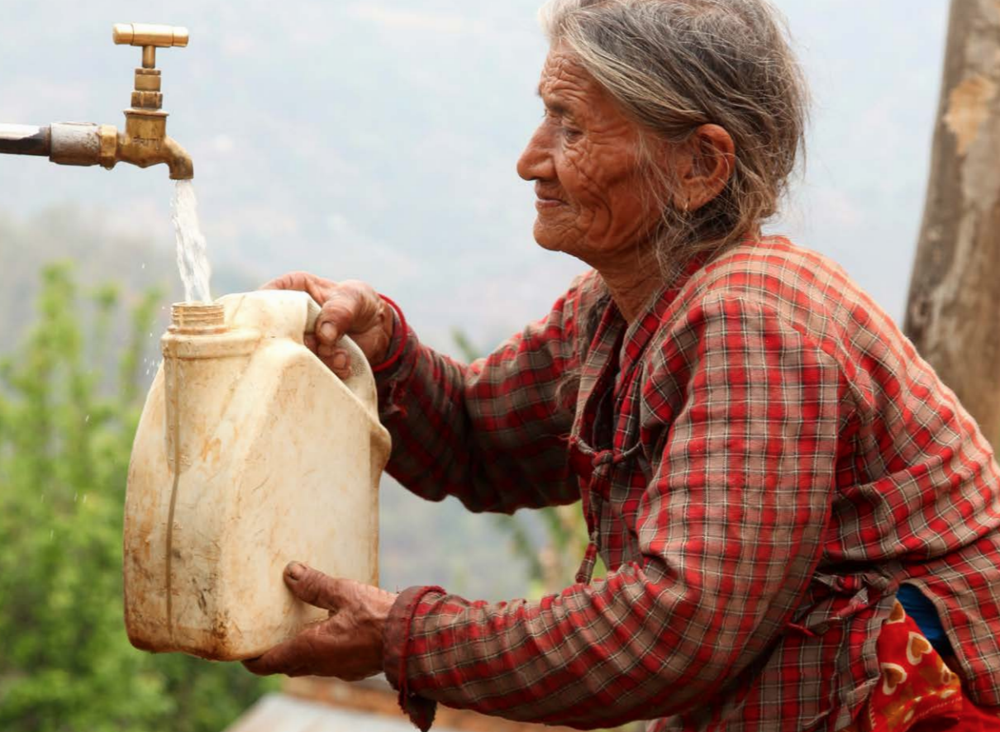
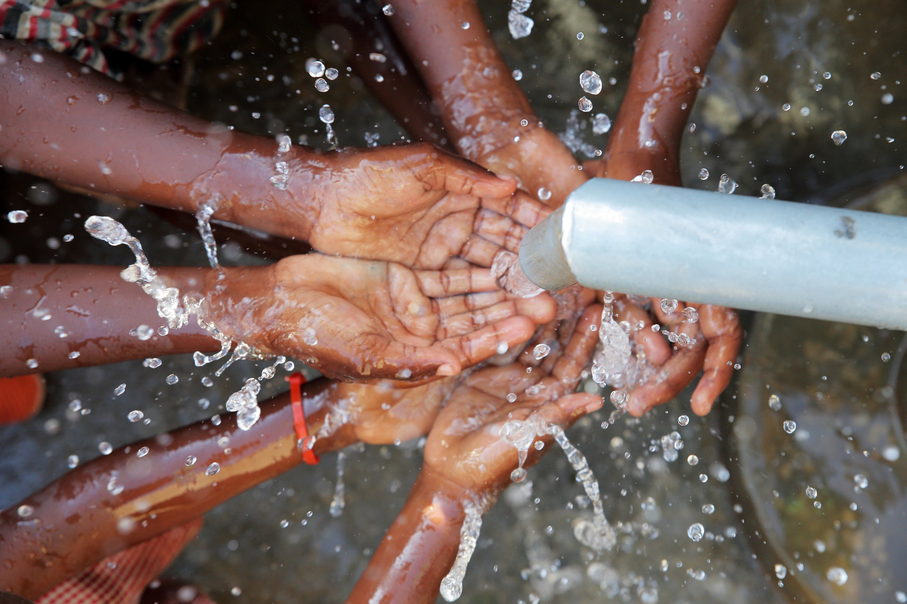
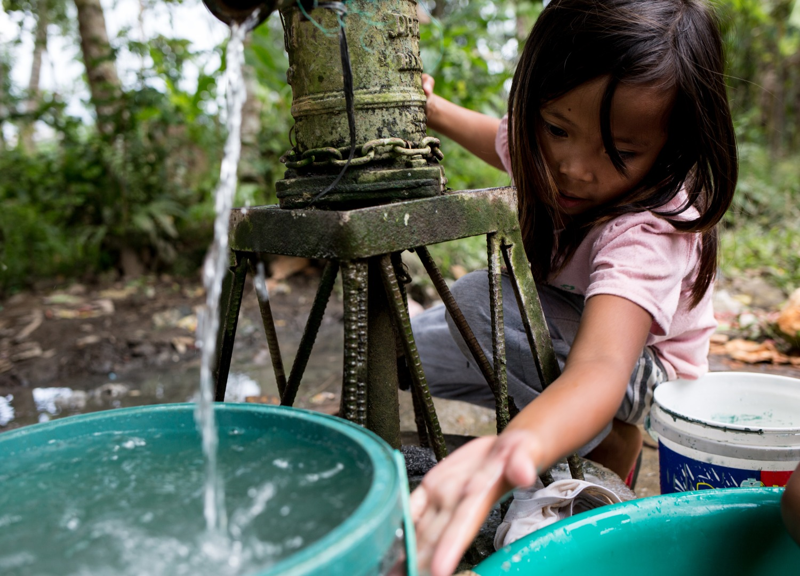

Secara global, pencapaian SDG 6 menunjukkan kemajuan tetapi masih sangat lambat sehingga dapat dibilang dunia belum berada pada jalur yang tepat untuk mencapai target akses air bersih dan sanitasi universal pada tahun 2030.Sejak 2015 hingga 2024, porsi penduduk yang mendapatkan layanan air minum aman meningkat dari 68% menjadi 74%, sanitasi aman dari 48% menjadi 58%, dan layanan kebersihan dasar dari 66% menjadi 80%. Namun, pada tahun 2024 masih terdapat 2,1 miliar orang tanpa akses air minum yang dikelola dengan aman, 3,4 miliar orang tanpa sanitasi layak, dan 1,7 miliar orang tanpa layanan kebersihan dasar. Di sekolah, pada tahun 2023 sebanyak 447 juta anak tidak memiliki layanan air minum dasar, 427 juta anak tanpa sanitasi dasar, dan 646 juta anak tanpa fasilitas kebersihan dasar. Selain itu, kualitas pengelolaan air juga masih menjadi tantangan. Hanya 56% limbah domestik yang berhasil diolah dengan aman pada tahun 2022, tanpa peningkatan sejak 2020. Efisiensi penggunaan air meningkat 23% dari 2015–2022, tetapi 57% negara masih memiliki tingkat efisiensi air yang rendah, dan tekanan terhadap sumber daya air tetap tinggi. Beberapa wilayah seperti Afrika Utara, Asia Barat, Asia Selatan, dan Asia Tengah menghadapi kelangkaan air yang ekstrem yang dapat mengganggu kesehatan, ekonomi, dan stabilitas sosial. Dalam hal tata kelola, implementasi Pengelolaan Sumber Daya Air Terpadu masih berjalan lambat, hanya mencapai 57% pada 2023. Dari 153 negara yang berbagi sumber air lintas batas, hanya 43 negara yang memiliki perjanjian kerja sama yang kuat, sementara lebih dari 20 negara belum memiliki pengaturan sama sekali. Dukungan pendanaan internasional juga menurun, sehingga memperlambat pembangunan infrastruktur air dan sanitasi di negara berkembang. Untuk mengejar target 2030, diperlukan komitmen global yang jauh lebih kuat, termasuk kolaborasi lintas negara dan peningkatan investasi dalam akses air bersih dan sanitasi yang berkelanjutan bagi semua.
Di Indonesia, akses ke air minum layak sudah meningkat secara signifikan dalam beberapa tahun terakhir. Data terbaru menunjukkan bahwa pada 2024 sekitar 92,64% rumah tangga memiliki akses ke air minum layak. Ini berarti mayoritas keluarga sudah bisa memperoleh air minum dari sumber layak, meskipun akses ini tidak menjamin bahwa airnya aman untuk diminum langsung. Namun, sebagian besar air untuk kebutuhan sehari-hari tetap bergantung pada air tanah atau sumur bor/ sumur gali, bukan dari jaringan perpipaan publik. Hal ini sendiri menyebabkan penurunan muka air tanah yang berpotensi menenggelamkan area pesisir karena penggunaan yang berlebihan. Sementara itu, akses ke sanitasi layak juga mengalami kemajuan, dengan sekitar 82,36% rumah tangga memiliki sanitasi layak per 2023. Namun, akses ke sanitasi yang benar-benar “aman dan dikelola dengan baik” jauh lebih rendah karena data 2024 menunjukkan hanya sekitar 10,25% rumah tangga yang memiliki sanitasi aman. Praktik sanitasi yang belum ideal pun sangat berdampak pada kualitas air dan lingkungan, serta berpotensi menimbulkan risiko kesehatan, terutama di daerah dengan sanitasi dan sistem pengelolaan limbah yang kurang memadai. Hal ini bisa dilihat dari sebagian besar sungai di Indonesia yang tercemar (59%), tersumbat sampah, dan mengalami sedimentasi, yang mengurangi ketersediaan air bersih. Akibatnya, hampir 70% sumber air minum rumah tangga tercemar limbah tinja. Secara keseluruhan, kondisi akses air minum dan sanitasi di Indonesia terus menunjukkan perkembangan yang positif. Mayoritas rumah tangga kini telah memiliki akses ke layanan dasar tersebut, dan peningkatan cakupan masih berlangsung dari tahun ke tahun. Walaupun masih banyak tantangan yang perlu dihadapi seperti perbedaan akses antarwilayah, terutama terkait kualitas sumber air dan sanitasi yang benar-benar aman, kondisi Indonesia menunjukkan bahwa Indonesia berada pada jalur yang semakin baik dalam mencapai target SDG 6.
Di balik kemajuan yang telah dicapai sejauh ini, Indonesia masih menghadapi sejumlah tantangan besar dalam upaya memenuhi akses air bersih dan sanitasi bagi seluruh masyarakat. Salah satu tantangan utama yang dihadapi oleh Indonesia adalah karena faktor ekonomi. Akibat keterbatasan infrastruktur dan anggaran, disparitas regional atau kesenjangan akses air bersih dan sanitasi antar wilayah masih sangat nyata, terutama di wilayah timur seperti Papua Barat dan Maluku karena memiliki akses air bersih jauh lebih rendah dibandingkan wilayah lain. Tidak hanya itu, kurangnya infrastruktur akibat anggaran yang kurang merata juga menghambat pemerataan pengelolaan air dan sistem pembuangan limbah. Budaya masyarakat Indonesia sendiri juga menjadi tantangan yang besar, terutama karena sudah dilakukan dari generasi ke generasi sehingga sulit untuk dihilangkan. Kebiasaan seperti membuang sampah sembarangan yang menyebabkan pencemaran air dan penyumbatan saluran sehingga sering terjadi banjir terutama di kota-kota besar, serta pemanfaatan sumur gali dan air tanah yang menimbulkan penurunan kualitas dan ketersediaan air secara turun-temurun menjadi faktor terbesar mengapa air bersih dan sanitasi sulit untuk dicapai karena mayoritas dari masyarakat tidak ikut berkontribusi dan malah yang memberikan tantangan lebih. Hal ini sendiri dapat muncul karena adanya tantangan dari faktor sosial dimana kesadaran masyarakat akan pentingnya kebersihan dan sanitasi aman sangatlah minim, sehingga menyebabkan praktik penggunaan sumber air yang tidak higienis tetap berlangsung. Selain itu, pertumbuhan penduduk dan urbanisasi memperberat tekanan terhadap sumber air dan fasilitas sanitasi terutama di kota-kota besar. Sementara itu, dari aspek politik dan tata kelola masih terjadi tumpang tindih regulasi karena pengelolaan air dan sanitasi melibatkan banyak lembaga dengan tugas yang saling bersinggungan. Ketidakjelasan pembagian tanggung jawab ini membuat pelaksanaan program di lapangan seringkali tidak terkoordinasi dengan baik, sehingga hasilnya kurang maksimal. Selain itu, meskipun aturan terkait pencemaran air sudah ada, pengawasan dan penegakan hukumnya belum berjalan efektif, sehingga limbah domestik, pertanian, dan industri masih sering mencemari sumber air tanpa sanksi yang tegas. Tidak hanya itu, setiap daerah memiliki prioritas pembangunan yang berbeda-beda. Ada daerah yang mengutamakan penyediaan air bersih dan perbaikan sanitasi, tetapi ada pula yang lebih fokus pada sektor lain seperti pembangunan infrastruktur umum atau ekonomi. Ketidakseimbangan prioritas ini membuat pemerataan akses layanan air bersih dan sanitasi di seluruh wilayah Indonesia menjadi lambat.
Indonesia memiliki kekayaan sumber daya air yang sangat besar karena kondisi geografisnya sebagai negara tropis dan kepulauan. Hal ini memberikan Indonesia potensi dan peluang yang sangat tinggi untuk mencapai tujuan SDGs keenam yaitu mengenai air bersih dan sanitasi. Curah hujan yang tinggi setiap tahun menciptakan peluang pemanfaatan air hujan sebagai sumber air baku alternatif, terutama di wilayah yang belum memiliki jaringan perpipaan. Selain itu, keberadaan sungai, danau, hingga cekungan air tanah yang luas dapat memenuhi kebutuhan air bersih masyarakat apabila dikelola secara berkelanjutan. Peluang lain muncul melalui penerapan konservasi daerah resapan dan rehabilitasi daerah aliran sungai (DAS) untuk menjamin ketersediaan air jangka panjang. Dengan peningkatan kapasitas pengelolaan sumber air, Indonesia dapat memaksimalkan sumber daya alam yang dimilikinya untuk mempercepat pencapaian akses air bersih yang merata.
Indonesia memiliki potensi dan peluang besar dalam Sumber Daya Manusia (SDM) sehingga dapat mencapai target air bersih dan sanitasi. Sebagai negara dengan jumlah penduduk terbesar keempat di dunia, Indonesia memiliki tenaga kerja dan komunitas yang sangat luas untuk ikut terlibat. Dengan meningkatkan pendidikan melalui berbagai program, SDM Indonesia akan menjadi lebih berkualitas. Dengan begitu, SDM seperti sanitarian, kader kesehatan lingkungan, dan organisasi masyarakat bisa aktif membantu pemerintah dalam memberikan edukasi dan layanan kepada warga. Keberadaan SDM ini membuat implementasi program di seluruh wilayah Indonesia menjadi lebih mungkin dilakukan. Selain itu, Indonesia memiliki budaya gotong-royong yang masih kuat hingga sekarang. Kebiasaan saling membantu dalam membangun fasilitas umum seperti sumur, saluran air, atau toilet komunal membuat masyarakat lebih siap untuk berpartisipasi dalam menjaga akses air bersih dan sanitasi. Kesadaran kesehatan masyarakat pun semakin meningkat seiring meningkatnya edukasi dan literasi tentang lingkungan serta kebersihan. Hal ini membuka peluang besar untuk perubahan perilaku yang lebih baik secara kolektif, seperti penggunaan toilet sehat, pengolahan limbah rumah tangga, dan kebiasaan mencuci tangan dengan benar.
Indonesia memiliki potensi besar dalam pemanfaatan teknologi untuk mempercepat layanan air bersih dan sanitasi. Salah satu potensinya adalah kemampuan teknologi untuk menyesuaikan diri dengan kondisi geografis Indonesia yang beragam, mulai dari perkotaan sampai pulau kecil yang sulit dijangkau. Teknologi seperti alat penyaring air sederhana, sistem pengolahan air skala komunitas, toilet ramah lingkungan, dan penggunaan energi surya dapat diterapkan tanpa harus menunggu pembangunan infrastruktur besar yang memakan waktu panjang. Sumber daya teknologi yang semakin berkembang di dalam negeri juga sangat mendorong hal ini dikarenakan tidak selalu harus bergantung pada impor alat atau teknologi dari luar. Sementara itu, Indonesia juga memiliki banyak peluang dari perkembangan teknologi. Digitalisasi memberikan peluang untuk membuat layanan air lebih efisien melalui sensor kualitas air, pemetaan sumber air secara digital, dan pemantauan jaringan pipa sehingga kebocoran bisa cepat diketahui dan diperbaiki. Selain itu, banyaknya startup dan inovator lokal membuka peluang untuk menghadirkan solusi air bersih dan sanitasi yang lebih murah, mudah dipakai, dan sesuai kebutuhan masyarakat. Peluang ini akan semakin besar jika pemerintah memberi dukungan berupa pendanaan, pelatihan, serta kemudahan kerja sama dengan masyarakat dan pemerintah daerah.
Indonesia memiliki potensi yang kuat dari sisi kebijakan pemerintah dalam mencapai tujuan SDGs. Hal ini terlihat dari dimasukkannya target SDG 6 (Air Bersih dan Sanitasi Layak) ke dalam rencana pembangunan nasional. Sehingga, peningkatan layanan air dan sanitasi sudah menjadi prioritas penting negara, baik dalam perencanaan anggaran maupun pelaksanaan program. Selain itu, kebijakan desentralisasi juga menjadi potensi besar, karena setiap pemerintah daerah bisa menyusun program yang lebih sesuai dengan kondisi wilayahnya. Misalnya di perkotaan fokus pada perbaikan jaringan pipa, sedangkan di pedesaan lebih fokus pada pengelolaan air sumur atau sanitasi berbasis masyarakat. Sementara itu, dari sisi peluang, Indonesia memiliki kesempatan yang besar untuk menarik investasi dan dukungan dari berbagai pihak, seperti sektor swasta, organisasi internasional, dan lembaga donor. Kerja sama ini dapat menyediakan tambahan biaya untuk membangun fasilitas air bersih dan sanitasi yang belum merata di seluruh wilayah. Selain itu, semakin banyaknya program dan pendanaan untuk wilayah tertinggal menjadi peluang bagi Indonesia untuk mengejar ketertinggalan dari daerah yang sudah maju terlebih dahulu.
Masyarakat berperan sebagai pelaku utama dalam menjaga dan mengola air bersih dan sanitasi di lingkungannya. Hal ini dikarenakan masyarakatlah yang menjadi penyebab bisa terwujudnya air yang bersih dan sanitasi dan masyarakat jugalah yang akan menikmati hal tersebut. Masyarakat dapat berperan aktif dalam mencapai tujuan SDGs air bersih dan sanitasi dengan melakukan tindakan nyata dalam kehidupan sehari-hari baik oleh individu, keluarga, komunitas, sekolah, ataupun organisasi masyarakat dengan melakukan hal-hal berikut :
Seorang individu berperan dalam menjaga dan mengelola air bersih dan sanitasi dengan bertanggung jawab atas dirinya sendiri.
Suatu keluarga berperan dalam menjaga dan mengelola air bersih dan sanitasi dengan mendidik, membiasakan, dan menjaga lingkungan rumah. Keluarga juga merupakan tempat membentuk kebiasaan sanitasi yang baik sejak kecil.
Suatu sekolah berperan dalam menjaga dan mengelola air bersih dan sanitasi dengan menjadi pusat edukasi dan pembiasaan pola hidup bersih. Sekolah juga mencetak generasi yang sadar sanitasi dan peduli air bersih.
Pemerintah berperan dalam menjaga dan mengelola air bersih dan sanitasi dengan menjadi pengatur, penyedia layanan dasar, dan pengawas pelaksanaan. Pemerintah memastikan seluruh warga mendapatkan hak atas air bersih dan sanitasi layak.